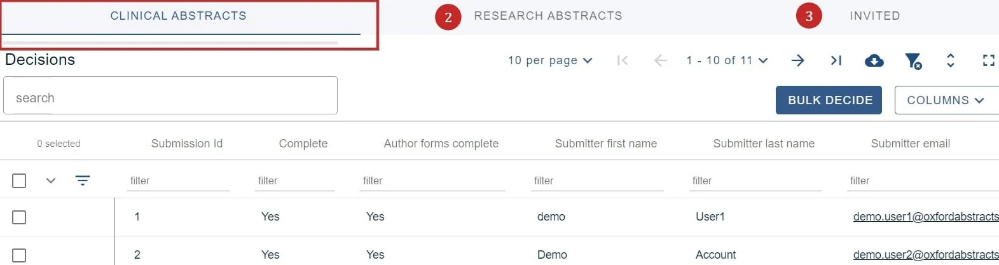
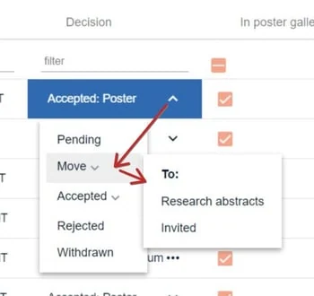

Multi-stage - the decision stage
For event organisersNot an organiser?
As well as recording a decision (accepting/ rejecting/ withdrawing a submission) you can also move a submission to another stage.#
Unlike the submission and review forms, there is only one decision form in multi-stage, see
Design the decision form for guidance.
Go to Event dashboard → Abstract Management → Decisions → Table
It is advised that you first read The decisions table
and Recording a decision (accepting/ rejecting/ withdrawing a submission)
If you are using multi stage, the different stages will be shown across the top of the screen. In this case you can switch between Clinical Abstracts, Research Abstracts and Invited by clicking on the tabs at the top of the screen. In the screen below, the Clinical Abstracts stage is selected (denoted by an underline).

Go to the decisions column to make your choice. As well as accepting, rejecting or withdrawing a submission, you can move it to another stage, as shown below.

The decision status (in the example above, the decision is Accepted: Poster) will be carried through to the new stage.
Didn't solve it? Ask our support team
No question is too small, and there's no charge for asking. Raise a ticket and someone who knows the software will pick it up.
Did this page solve it?
Thanks — this helps us fix it.